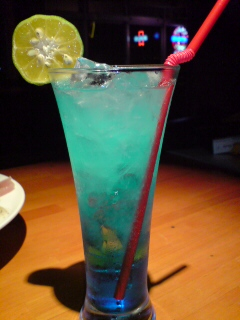
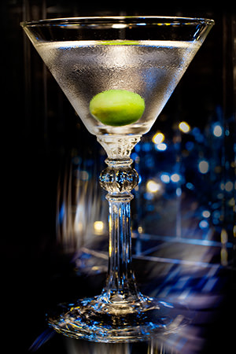
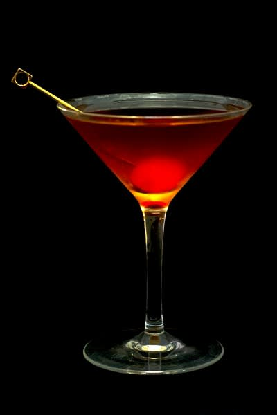
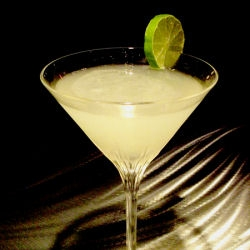

こだわりのカクテル集

チャイナブルー
ライチリキュールをベースにブルーキュラソーとグレープフルーツジュースで味付けしたカクテル。見た目から女性にも大人気。

マティーニ
ジンとドライベルモットを4:1の割合でステアしたカクテル。通称カクテルの王様とも呼ばれる。

マンハッタン
ウイスキーをベースにスイートベルモットとアンゴスチュラビターズを少量入れたカクテル。通称カクテルの女王とも呼ばれ、バーテンダー泣かせの一杯でもある。

カミカゼ
ウォッカ、コアントロー、ライムジュースをそれぞれ1：1：1でシェイクして作ったカクテル。アメリカで考案されたカクテルであるが、味の鋭さから神風特攻隊を彷彿とさせるところが名前の所以であるといわれている。